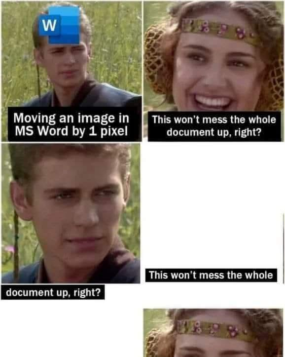

Why I Love LaTeX
My PhD thesis was written in LaTeX, and so were my papers. So, to the muted horror of every recruiter who has ever asked for "the Word version," is my CV. I have spent a meaningful fraction of my adult life inside a markup language originally released in the 1980s, and I am here to tell you it was not Stockholm syndrome, but respect and, I admit, laziness. LaTeX, once you have it down, is so much easier to use than WYSIWYG editors.
Quick jargon guide
- LaTeX: (pronounced "lay-tech", definitely not "lay-tecks") a typesetting system: you write plain text with commands like
\section{...}, and a compiler turns it into a polished PDF. The standard tool of mathematics, physics, and computer science publishing. - Typesetting: the craft of arranging text on a page: spacing, line breaks, hyphenation, where the figures land. What printers did by hand for five centuries.
- Markup: instructions written in the text, about the text: "this is a heading," "emphasise this." As opposed to clicking a toolbar and hoping.
- WYSIWYG: "what you see is what you get". Word, Google Docs. You edit the final appearance directly, which sounds obviously better except (it isn't).
- Compiling: running the program that converts your marked-up text into the finished document. Comes with error messages best described as "vintage."
The separation that changes everything
LaTeX's founding idea is that what you're saying and how it looks are different jobs, done best by different parties. You handle the words and the structure: this is a chapter, this is a definition, this deserves emphasis. Design is handled through clearly defined rules that generally affect the whole document at once: spacing, hyphenation, figure placement, the numbering of every section, equation, and reference. In Word, this is a standard experience:

It's the same principle that makes good data science work, too: separate the content from the presentation and both improve. My thesis had hundreds of numbered things: figures, tables, theorems, references to all of the above. Every single number was generated, every cross-reference resolved automatically, every citation formatted from a bibliography file I never once styled by hand. I've known people to fight their word processors for whole afternoons over master's theses a third the length. I fought mine too, but it's often a fight fought once per type of issue, not every citation, and every plot.
It's just text
A LaTeX document is a plain text file, which also allows for:
- Version control. My thesis lived in git, like code, because it was code. Every draft diffable, every deleted paragraph recoverable, every "what did I change since my supervisor read this" answerable.
- Longevity. The
.texfiles from decades ago still compile. No format lock-in, no "this document was created in a newer version," no ransom paid to any vendor. - Tooling. Search it, script it, generate it. When my experiments produced results, code wrote the tables directly into the document. No transcription, no transcription errors.
- Focus. A text file cannot distract you with 40 fonts. The absence of formatting options while drafting is not a limitation; it's the whole trick.
- Frugality. You don't need an Office 365 license to use LaTeX, it's completely free if you run it locally.
It looks like this:
\documentclass[11pt]{report}
\usepackage{amsmath}
\usepackage[backend=biber]{biblatex}
\addbibresource{thesis.bib}
\begin{document}
\chapter{Introduction}
Scheduling problems are, politely put, everywhere.
As shown in Section~\ref{sec:motivation}, the real
question is not whether to optimise but what to
optimise \emph{for}.
\end{document}The Output
LaTeX documents look right, obvious once you've compared them side by side with the alternative: the line spacing, the justified text with proper hyphenation, the kerning, the ligatures, mathematics set the way mathematics should look, without the nightmare-inducing Word equation editor. Knuth built the underlying engine, TeX, because he was (rightly) offended by how his own books were being typeset, and that offence, refined over decades, is now free software! When my thesis came back from the binders it looked like a real book, because by every standard that matters it was typeset like one.
Getting started
Rather than describe it further, here is a complete LaTeX document. It shows the three things beginners care about: a title block, mathematics, and a table.
% Getting started with LaTeX - the whole document, no hidden parts.
\documentclass[11pt]{article}
\usepackage[a4paper, margin=2.5cm]{geometry}
\usepackage{amsmath}
\usepackage{booktabs}
\title{Getting Started with \LaTeX}
\author{Ken Reid \\ \texttt{kenreid.co.uk}}
\date{July 2026}
\begin{document}
\maketitle
\section{How this works}
You are reading a PDF that was generated from about forty
lines of plain text. Headings are numbered automatically,
and nothing on this page was nudged into place by hand.
\section{Mathematics, the party trick}
Notation that word processors fight you over is native here:
\[
\hat{\theta} \;=\; \arg\max_{\theta}
\sum_{i=1}^{n} \log p(x_i \mid \theta)
\]
\section{Structure for free}
\begin{itemize}
\item Sections, figures, and equations number themselves.
\item Cross-references update when things move.
\item Bibliographies format themselves from a reference file.
\end{itemize}
\begin{center}
\begin{tabular}{lcc}
\toprule
Tool & Learning curve & Ceiling \\
\midrule
Word & flat & low \\
Markdown & flat & medium \\
\LaTeX{} & steep & none \\
\bottomrule
\end{tabular}
\end{center}
\end{document}And here is exactly what that produces:
To try it yourself, no installation required: open this exact file in Overleaf, which will import the source into a free editor in your browser. You need an account, but it makes the whole process of writing LaTeX much easier. Change a word, press Recompile (CTRL-S or CMD-S), and boom, a beautiful PDF.
LaTeX is Used Everywhere
The getting-started page above also explains, in miniature, why LaTeX became the default in three particular worlds:
- Research. Mathematics is native, citations manage themselves from a reference file, and nearly every journal and conference publishes a LaTeX template that formats your paper to their rules automatically. Overleaf added the last missing piece: real-time collaboration, so co-authors edit one live document instead of emailing
final_v7_REVISED.docxinto the email archives. - Tech fields. Plain text means version control, diffs, code review for documents, and automation: results generated by your code can be written into your report by your code. A document pipeline you can script is a document pipeline that scales, which is why it fits engineering culture like a glove.
- Professional documents. Anything long-lived and repeatedly revised (a CV, a report series, a book) benefits from separating content from presentation. The typography does the rest of the work for you, every single compile, forever.
The real costs
Love with no complaints is marketing, so: the error messages are archaeological artefacts, a missing brace can produce forty lines of complaint pointing somewhere unrelated, and "Overfull \hbox (badness 10000)" is a sentence I have read several thousand times. And the learning curve is real: the first document takes an evening; the first document you're proud of takes longer.
Every one of those costs is paid in the first ten percent of a document's life, while the benefits (the automation, the consistency, the diffs, the typography) compound. LaTeX front-loads its pain while word amortises its pain across every day you use it.
Who should actually learn it
Not everyone, truthfully. If you write short documents with simple structure, modern tools are fine and Markdown is friendlier still. But if you write anything long, structured, numbered, cited, or mathematical (a thesis, a book, a paper, a technical report, or a CV you'll be revising for the next thirty years) the evening it takes to start is one of the best-paying evenings available to you. Overleaf runs it in a browser now, with none of the old installation hazing.
Mine was simple: the thesis was going to have my name on it forever. It seemed worth typesetting like a real publication should be.
Common questions
Isn't LaTeX overkill for normal documents?
For a one-page letter, absolutely. The break-even point is roughly where structure appears: numbered sections, citations, figures that must stay labelled and cross-referenced.
Overleaf or a local installation?
Overleaf to learn and collaborate: zero setup, live preview, your co-author can't break your machine. Local (TeX Live plus any good editor) once you want speed, offline work, and git.
Is LaTeX still relevant with modern tools and AI writing assistants?
More than ever, oddly: it's plain text, so every modern tool (git, scripts, LLMs) can read and write it natively.
What about your CV claim, seriously, LaTeX for a CV?
Seriously: one source file, decades of updates, perfect consistency, and tailored variants generated by commenting sections in and out.